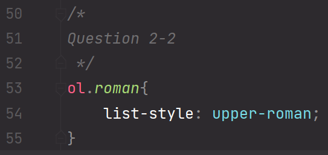

Exercice 2 - Style de liste et de table
-
On veut maintenant créer une feuille de style externe, c'est-à-dire une feuille de style déclarée non pas à l'intérieur de compte-rendu-tp2.html mais dans un fichier externe nommé compte-rendu-tp2.css.
Le contenu de la balise "style" dans le "head" du fichier a été déplacé au sein d'un fichier .css dédié.
On peut à présent complètement commenter cette partie du fichier HTML. -
Faites en sorte que la liste des questions de cet exercice et de l'exercice précédent utilise les chiffres romains (en majuscule) plutôt que les traditionnels chiffres 1, 2, 3, etc.
La propriété "list-style" permet de modifier l'aspect de la liste.

Seul cette liste et la liste précédente doivent utiliser ce format (et non les listes à venir).
Pour ce faire, on utilise cette propriété sur une classe précise (.roman).
Cette classe sera donnée aux balises "ol". -
Donc dans un premier temps, créez la table HTML en utilisant les balises table, th et td dans votre compte rendu.
Rang Titre Recette 1 Doctor Strange in the Multiverse of Madness $187,420,998 2 Black Panther: Wakanda Forever $181,339,761 3 Jurassic World Dominion $145,075,625 4 Thor: Love and Thunder $144,165,107 5 The Batman $134,008,624 -
Faites en sorte que la table occupe toute la largeur du compte rendu.
La propriété "width" permet de gérer la largeur que prend un élément par rapport à l'espace accordé par l'élément au dessus de lui.
-
Centrez les titres et changer la police de caractères des titres pour utiliser des petites majuscules (small caps).
La propriété "text-align: center" permet de centrer le texte.
La propriété "font-family" permet de changer la police d'écriture
"Font-Variant: small-caps" permet de répondre au besoin exprimé en dernier. -
Aérez la table avec la propriété padding pour que le texte ne soit pas collé aux bordures.
On ajoute du padding à la fois aux balises "th" et "td"
-
Faites en sorte que les valeurs des deux premières colonnes (rang et titre) soient alignées à gauche et que les valeurs de la dernière colonne soient centrées.
On commence par définir un alignement de texte centré affectant chaque balise "tr".
En dessous de cela, on spécifie un alignement de texte centré qui affecte la dernière balise "td" fille de chaque balise "tr"
-
Changez la couleur de fond des lignes paires (even) pour mettre du vert clair en utilisant la pseudo-classe :nth-child.
On sélectionne toutes les balises "tr" paires, et on y applique une modification de la couleur de fond (background-color)
-
Faites en sorte que si l'on survole une ligne avec la souris la couleur du fond corresponde à 18 sur 255 de rouge, 32 sur 255 de vert et 43 sur 255 de bleu en utilisant un codage hexadécimal.
On applique une modification de couleur de fond (background-color) mais en passant des paramètres "rgb" au lieu d'un code hexadécimal.